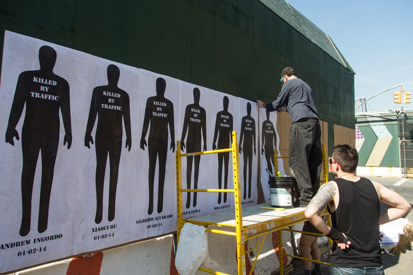
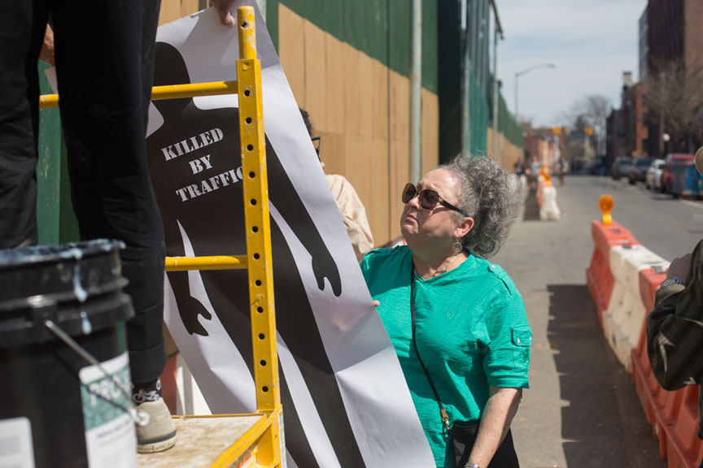
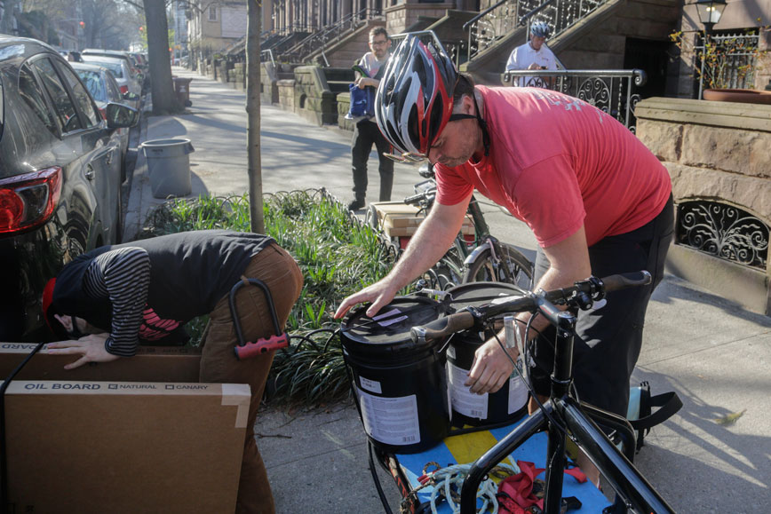
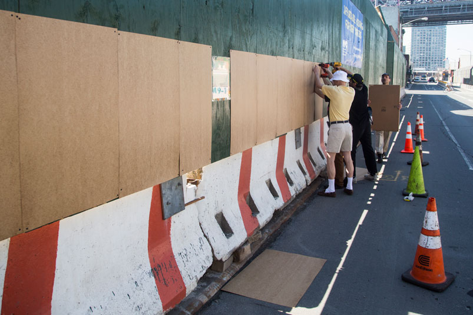
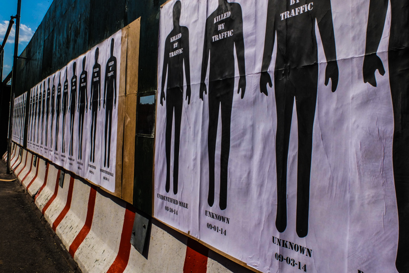
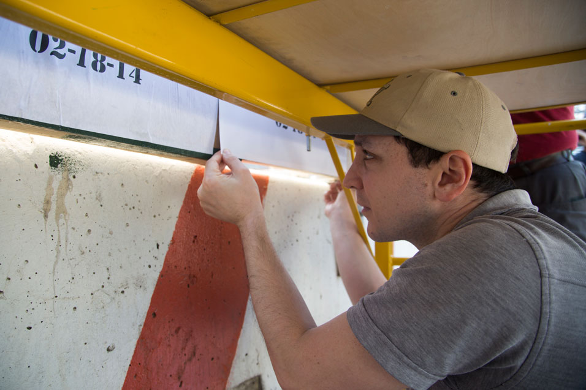
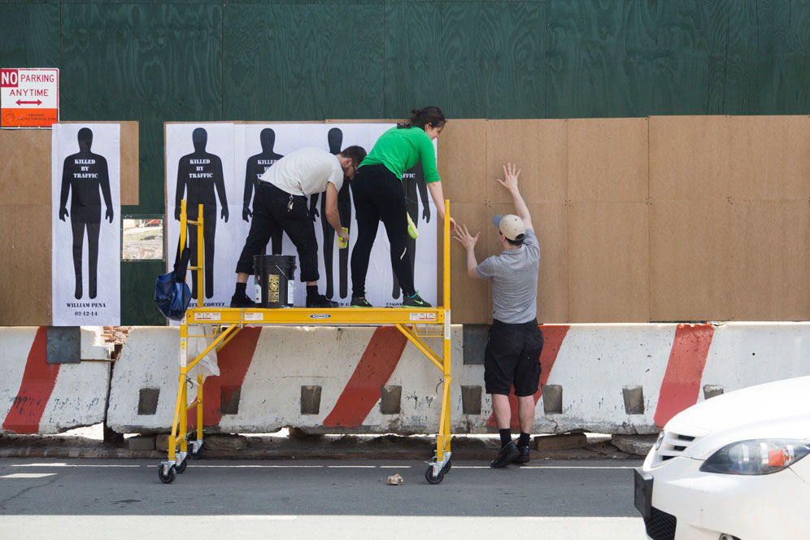
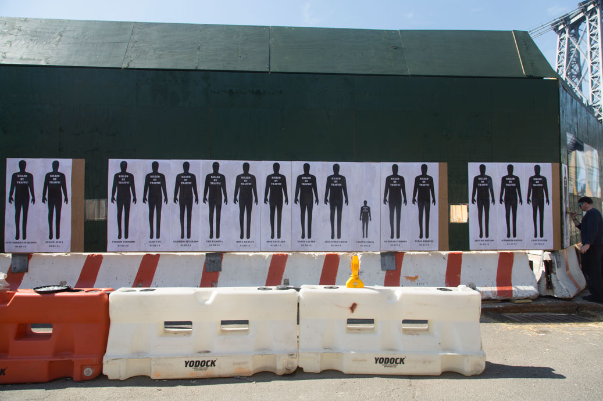
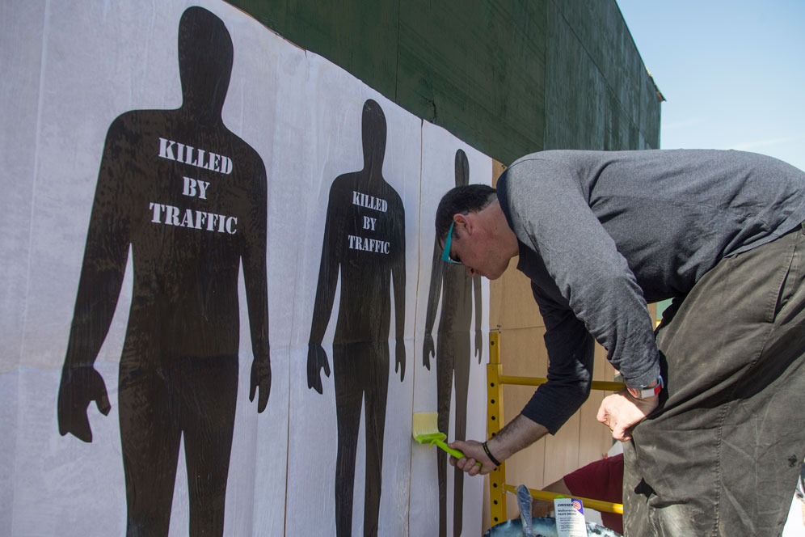

RIGHT OF WAY
2014 memorial
269 People were killed by cars in NYC in 2014
144
Pedestrians
20
Cyclists
95
people in cars
10
unknown
Right of Way remembers them with a large public art installation


On April 18th, Right of way installed a memorial for 264 victims of traffic violence on Kent Avenue in Brooklyn.
Click here to read the full report
.







Map of those killed in 2014